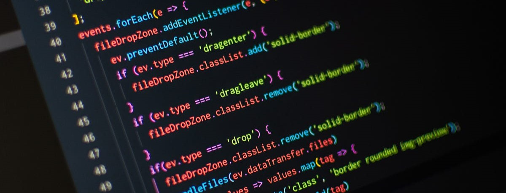
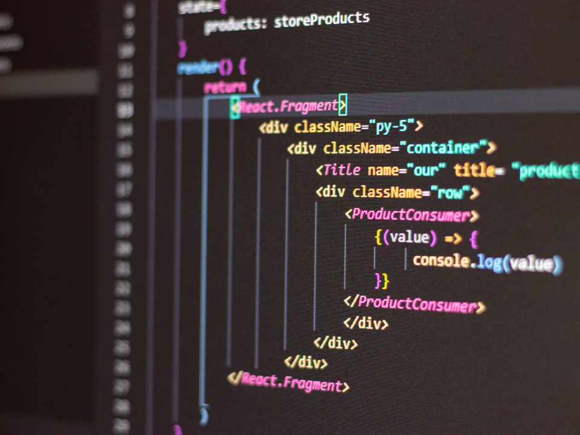

Arnau Costa Pont
Passionate about code and driven to create innovative web solutions, I am Arnau, a dedicated Full Stack Web Developer. With a strong foundation in both front-end and back-end development, I am constantly seeking opportunities to apply my skills and automate tasks to improve efficiency and user experiences. With a keen eye for detail and a commitment to delivering high-quality results, I am ready to contribute to your team's success by leveraging my technical expertise in web development.
Who am i

I'm Arnau, a -year-old currently studying computer science. I grew up in a small village called Hostalets de Balenya. From a young age, I've been fascinated by computers and their inner workings. I remember trying to create a video game using PowerPoint when I was 11, even though I didn't know how to code 😂😂.
My passion for technology has led me to pursue a degree in computer science, and I'm committed to deepening my understanding of computer systems. I'm eager to leverage my knowledge and curiosity to contribute to the field of technology.
My passion for technology has led me to pursue a degree in computer science, and I'm committed to deepening my understanding of computer systems. I'm eager to leverage my knowledge and curiosity to contribute to the field of technology.
Experiences
During my internship at HGG, I was immersed in the world of web development. Working closely with the hospital's IT team, I had the opportunity to contribute to the creation of web applications tailored for the healthcare environment. This experience exposed me to the intricacies of developing applications that meet the specific needs of a hospital, from appointment scheduling systems to data management tools. The exposure to real-world healthcare applications significantly broadened my expertise in web development.
Subsequently, my role at a meat factory as a web developer and data analyst allowed me to apply my web development skills in a corporate setting. One of my notable achievements in this position was the development of a web application designed to assess cost-to-expense ratios for various sections of the company. This application streamlined the decision-making process and provided critical insights for improving efficiency and profitability. Additionally, I worked extensively with Excel, extracting and manipulating data from databases, and automating queries using Power Query. This experience reinforced my proficiency in data analysis and automation.
Through these roles, I honed my full stack web development skills, gained valuable insights into web applications' practical applications, and developed a strong foundation in data analysis. I am eager to continue leveraging my expertise to create innovative web solutions and automate tasks for future endeavors.
Beyond my professional roles, coding is not just a job for me; it's a genuine passion that I pursue in my free time. I find immense satisfaction in crafting software solutions, especially in the realm of automation and personal projects.
One of my favorite coding pastimes is enhancing my Linux installation through automation scripts. I enjoy tailoring my operating system to my exact needs and preferences. Whether it's optimizing system tasks, simplifying software installations, or customizing my desktop environment, I find joy in crafting automation code that enhances my Linux experience.
For the sheer love of coding, I embarked on a personal project to create a JavaScript framework, akin to jQuery, simply for the fun and challenge of it. This endeavor allowed me to explore the intricacies of web development further and develop a deeper understanding of JavaScript's capabilities. It was a testament to my enthusiasm for technology and my continuous desire to learn and grow as a developer.
One of my most rewarding personal achievements was automating a classic role-playing game similar to Dungeons and Dragons, called Anima: Beyond Fantasy. This undertaking required a combination of coding skills, creativity, and a deep understanding of game mechanics. I developed scripts and tools that streamlined gameplay, automated character management, and made the overall gaming experience more immersive and enjoyable for my group. This project not only demonstrated my technical prowess but also showcased my ability to apply coding to areas outside of traditional web development

Projects
